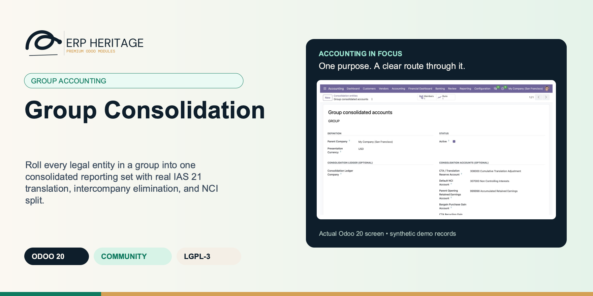
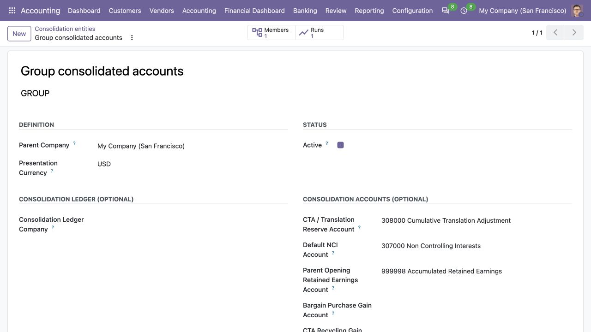
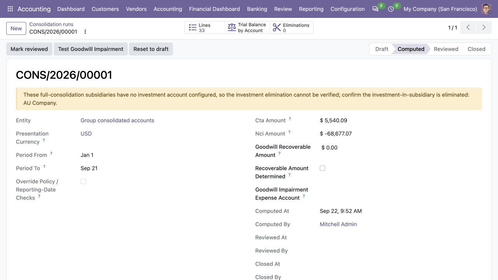
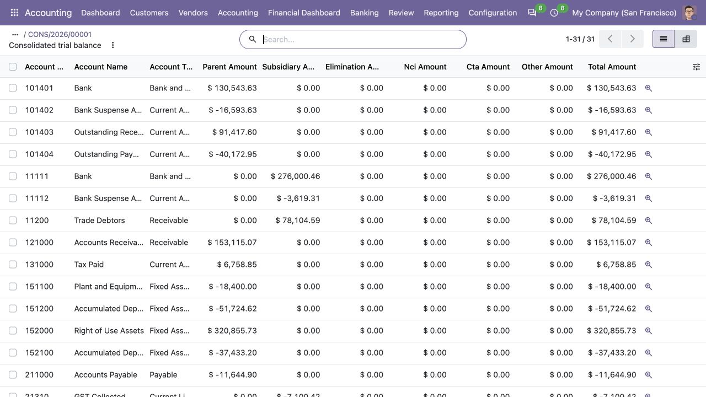

ERP HERITAGE / ODOO 20 COMMUNITY
Roll every legal entity in a group into one consolidated reporting set with real IAS 21 translation, intercompany elimination, and NCI split.
LGPL-3 · Odoo 20 · v20.0.1.3.1 · Module guide, setup, workflows and rollout checks
The purpose
Define a consolidation entity once: presentation currency, root company, and the list of member companies with ownership percentage and method (full, equity, or proportional). Each period, run a consolidation. The engine pulls every member's posted balances, translates them to the presentation currency, eliminates intercompany positions, computes non-controlling interest where ownership is below 100 percent, and writes the IAS 21 currency-translation-adjustment difference so the consolidated set balances.
Inside Odoo 20
Captured from Odoo 20 Community using synthetic demonstration records. Configuration screens show the available workflow; external service connectivity still requires the relevant provider setup and validation.

Consolidation entity defines the parent, reporting currency, member count and translation and minority-interest accounts.
Captured 2026-09-22 from isolated Odoo 20 Community database with synthetic demonstration records. No external submission or live banking activity is represented.

Computed but unreviewed consolidation run shows translation and minority-interest totals with a missing-investment-account warning.
Captured 2026-09-22 from isolated Odoo 20 Community database with synthetic demonstration records. No external submission or live banking activity is represented.

Consolidated trial balance separates parent, subsidiary, elimination, minority-interest, translation and total columns.
Captured 2026-09-22 from isolated Odoo 20 Community database with synthetic demonstration records. No external submission or live banking activity is represented.
Inside this module
Balance-sheet items convert at the closing rate, P&L at a time-weighted average rate weighted by days in effect. The gap is the CTA. A flat rate gives zero CTA, a real FX move gives a real adjustment. No naive endpoint average.
Each run line is tagged parent, subsidiary, elimination, CTA, or NCI. You can see exactly where any consolidated figure came from, which is the difference between a number you can defend and one you cannot.
Only posted member moves and posted eliminations feed a run. Eliminations must balance to post. Recompute rebuilds from scratch rather than stacking. The consolidated set is reproducible every time.
A rate that changes mid-period is weighted by the number of days each spot rate was in effect, not a naive average of the two endpoints. That is what IAS 21 actually asks for.
A single-day or inverted period falls back to the closing rate, and a period with no rate change inside it falls back to the midpoint rate, instead of dividing by zero.
When the average and closing rates are equal the CTA collapses to zero. No unconditional plug entry is forced. A genuine FX movement is required to produce a CTA, and a regression test asserts this.
Only posted member moves and only posted eliminations feed a run. Draft, unposted, or cancelled entries never leak into the consolidated set.
Re-running Compute deletes the prior run lines before rebuilding, so a recompute is never additive. The same inputs always give the same consolidated set.
From input to outcome
Define the group and period, checking the relationship between local charts and the target consolidation accounts. Gather group companies, ownership percentages, account mapping, translation policies, exchange rates and elimination accounts. Use a representative case with a known expected result so the team can separate configuration decisions from unexpected behaviour. Keep the supporting commercial or accounting evidence available during review.
Compute the consolidation from posted entity balances and inspect translation, elimination and non-controlling-interest results. Follow the record’s available actions in the order intended by the workflow. Review the selected company, relevant dates and any validation messages before continuing. If the source data changes, reassess the result against the updated evidence.
You open this period's run and hit Compute. The engine pulls each member's posted trial balance, translates the foreign subsidiary at closing and time-weighted average rates, applies your balanced intercompany eliminations, carves out the 30 percent non-controlling interest on the partly-owned entity, and writes the CTA difference as a tagged line so the set balances. You scan the source-tagged lines, confirm the figures trace, and move the run to reviewed, then closed. The closed run is locked in the UI and the whole transition is in the chatter. Next month you do it again, and recompute rebuilds cleanly rather than doubling up.
Trace material adjustments to their entity sources and review the currency translation adjustment before posting. Compare the outcome with the expected treatment for this case and record the reason for any difference that requires follow-up. Give exceptions an owner so they do not disappear inside a period-end spreadsheet.
Retain the run and its mapping assumptions as the group-close evidence; local-company corrections and group adjustments require separate review. Include the accepted operating example, configuration choices and unresolved dependencies in the handover. Review them when business policy, source data or the surrounding Odoo applications change.
Business situations
Group Consolidation is relevant to group controllers and consolidation preparers who need to answer this question: What do entity balances become after mapping, translation, elimination and the ownership split? Start with the process that creates the decision, identify its owner and agree what evidence the reviewer needs. A narrow pilot helps the team evaluate the supported workflow using its own accounting data before broadening access.
Use the module’s group accounting role as one part of a controlled close. Bring the relevant group companies, ownership percentages, account mapping, translation policies, exchange rates and elimination accounts to the review, then explain the result alongside the business event it represents. Establish which outputs become part of the reporting pack and which outstanding matters need a separate accounting decision.
Turn the business question into an acceptance case: What do entity balances become after mapping, translation, elimination and the ownership split? Use one ordinary example and one relevant exception from the supported scope below. Ask the intended operator to prepare it and the reviewer to explain the result. Retain that accepted example with the deployment notes so future changes can be assessed against an understood process.
Before the first result
Confirm that the organisation needs the supported group accounting process described here. Identify the responsible group controllers and consolidation preparers and write down the decision they expect the module to support. Use the limitations section to separate shipped behaviour from an integration, professional judgement or operational service that needs another owner.
Prepare group companies, ownership percentages, account mapping, translation policies, exchange rates and elimination accounts. Check the relevant records in the intended company and use dates that match the business event. Resolve missing accounting configuration before evaluating calculated output; plausible-looking totals do not establish that the chosen inputs or policies are correct.
This module declares Accounting Suite Base, FX Period End Revaluation as part of its installation foundation. Its direct standard-Odoo dependencies are account, mail. Review the actual dependency set in the target database before a rollout, especially where another addon also extends the same accounting models, menus or posting actions.
Define who operates Group Consolidation, who reviews unusual results and who maintains configuration. Run the representative workflow below in a test database using the intended users. Confirm that users can reach the work they own and that the reviewer understands the available evidence before moving the process into live operation.
Workflow reference
The translation is the real thing. Balance-sheet accounts convert at the closing rate at period end, while income and expense accounts convert at a time-weighted average rate that weights each spot rate by the number of days it was in effect across the period. The gap between the two rates is exactly what the CTA captures. A flat rate produces zero CTA, as it should, and a genuine FX movement produces a genuine adjustment.
Every consolidated number is traceable. Each run line is tagged by source (parent, subsidiary, elimination, CTA, or NCI), and the account-level consolidated trial balance drills back to those lines. The CTA difference is recorded against the configured equity translation-reserve account. An entity can remain a review-only reporting set, or post the reviewed snapshot to a dedicated consolidation-ledger company and preserve its reversal/delta history. Closing non-controlling-interest equity remains a stock KPI; a separate manager-confirmed post-consolidation schedule splits exact-period NCI profit and OCI, and Review snapshots those flows as server-owned statement-source output.
Intercompany elimination journals are balanced on post: debit must equal credit, or the post is refused. Only posted member moves and only posted eliminations feed a run, so draft and unposted entries never leak into the consolidated set.
The run has a draft to computed to reviewed to closed lifecycle. Recompute is idempotent: re-running Compute deletes reproducible projections and rebuilds them while durable disposal evidence survives and is replayed. Settled inputs and generated lines are locked at model level, every state change is captured in the chatter audit trail, and reset/reopen corrections require Accounting Manager privileges.
Method depth. Proportional members roll up at ownership share, applied after translation so the IAS 21 arithmetic is undistorted, and NCI configuration is blocked for them by constraint. Member account maps standardise subsidiary charts during extraction. Equity-method members are mandatory-config: current profit, cumulative carrying adjustments, dividends, OCI and documented foreign-associate FX are rolled forward, while the IAS 28.1A fair value option remains available. The IFRS 3 investment elimination runs automatically from reconciled account-by-account acquisition components, with acquisition NCI on a proportionate or fair-value basis, positive goodwill on an asset and any IFRS 3.34 bargain-purchase gain on explicit income. The CTA plug is split between parent and NCI per member. On disposal, immutable events preserve and replay the IAS 21.48/48C treatment. IFRS 10.B87/B92-93 guards block a compute when a member reports more than three months off the group date or is not policy-aligned, with an audited manager override.
Adding the parent company as a member is blocked with a validation error, so the parent is never double-counted in its own consolidation.
P&L accounts use a period-bounded sum while balance-sheet accounts use a cumulative-to-date sum. Each account type is read with the correct date window.
Name, presentation currency, root company, and member companies each with an ownership percentage and a consolidation method of full, equity, or proportional.
Pulls each member's posted balances, translates to the presentation currency at closing and time-weighted average rates, and assembles a source-tagged consolidated set.
Computes the closing-rate versus average-rate balancing difference and records it as a tagged kind=cta run line against the configured equity translation-reserve account. Optional dedicated-ledger posting preserves exact reviewed snapshots and reversals.
Subsidiary net assets, equity plus the current-period result, multiplied by one minus ownership percentage, recorded as its own non-controlling-interest run line for full-method members below 100 percent.
Free-form elimination journals against the consolidated set, enforced debit-equals-credit on post, with an audit trail per elimination.
Draft to computed to reviewed to closed. State changes are tracked in the chatter. Reset-to-draft is Accounting Manager only, and closed runs are read-only in the UI.
Technical request-scoped flag. It is true only when the consolidation parent, dedicated ledger, and every member company are enabled in the caller's current company context.
Currency the consolidated balances are reported in. Member companies whose functional currency differs are translated per IAS 21 at run time.
Optional dedicated company reserved for the consolidated ledger. When set, a computed run can post a single balanced, immutable journal entry into this company's books (IFRS 10 auditability), and closing the run then requires that move to be posted. Leave empty to keep the run a memo-only set of run lines, which is the default behaviour. This must NOT be an operating company whose transactions are already pulled into the consolidation, or the subsidiaries would be double-counted; use a company created solely to hold the consolidated result. Its chart of accounts must carry, by code, every account referenced by the run (share the parent chart, or map codes 1:1).
General journal in the consolidation ledger company that the posted consolidation move is booked to. When left empty, the first general journal in the consolidation company is used.
Equity account on the parent chart the IAS 21 currency translation adjustment (CTA) is booked to. When set, the run books the CTA plug to this account explicitly. When left empty the run falls back to a name heuristic (an equity account whose name contains 'translation' or 'CTA'); if that also resolves nothing and the CTA is non-zero the compute is refused rather than silently posting a CTA line with no account.
Equity account on the parent chart the non-controlling interest carve-out is booked to for members that do not set their own NCI account. When left empty the run falls back to a name heuristic (an equity account whose name contains 'non-controlling' or 'minority'); if that also resolves nothing and an NCI carve-out is non-zero the compute is refused rather than silently posting an NCI line with no account.
Parent-company equity unaffected account that receives net profit or loss posted before a run's period start. Required when the parent chart has more than one such account; prevents opening results from being mislabeled as CTA.
Income account used for an IFRS 3.34 bargain-purchase gain. A negative goodwill residual is never credited to the goodwill asset account.
When enabled (default, the shipped behaviour), each compute auto-generates the IFRS 3 acquisition elimination for every fully-configured full-method member: the parent's investment is removed against the subsidiary's acquisition-date equity, acquisition-date NCI is recognised on the member's NCI basis, and the residual is carried as goodwill (or a bargain-purchase credit). When disabled, no elimination is auto-generated and the run falls back to the diagnostic warning that the investment is not eliminated, leaving the entry to a manual elimination.
Income account credited when a member's accumulated translation GAIN is recycled from the CTA reserve to profit or loss on disposal of the member (IAS 21.48). A member whose CTA position link carries its own reclass gain account uses that instead.
Expense account debited when a member's accumulated translation LOSS is recycled from the CTA reserve to profit or loss on disposal of the member (IAS 21.48). A member whose CTA position link carries its own reclass loss account uses that instead.
When enabled, each compute also generates automatic elimination run lines (IFRS 10.B86) for intragroup balances BETWEEN member companies, in addition to any manual elimination entries: reciprocal receivables versus payables, and sales income against the counterparty's purchases / cost of sales. Each auto elimination is a balanced pair that nets to zero, so the run still balances and the CTA is unaffected. When a reciprocal intragroup balance does not agree between the two companies, a diagnostic is surfaced rather than the difference being silently plugged. Default off: leaving it unchecked reproduces the prior behaviour exactly.
Subsidiary company. Must be different from the parent company on the entity (the parent is consolidated by definition; a self-reference would double-count).
Parent's ownership of this subsidiary, as a percentage from 0.0 to 100.0. Drives the non-controlling interest (NCI) split: NCI = subsidiary equity x (1 - Ownership pct / 100). 100% ownership produces zero NCI.
Consolidation method. Full: 100% of subsidiary balances roll up, NCI carved out. Proportional: ownership% of balances roll up. Equity: subsidiary not rolled up; instead, parent's share of subsidiary equity carried as a single investment line.
Functional currency of the subsidiary. Defaults to the company's Currency on the company record. Override when the functional currency under IAS 21 differs from the booking currency (rare).
Account in the PARENT's books that carries the investment in this subsidiary. Used to detect whether the investment has been eliminated against the subsidiary's equity: an unposted elimination against this account means consolidated equity is still double-counted. When the acquisition basis is complete, the run automatically eliminates this balance under IFRS 3.
Subsidiary's total book equity at the acquisition date, as a positive number. Stated in the presentation currency when no historical rate is set; when a historical rate is set it is stated in the subsidiary's functional currency and translated at that rate (IAS 21.23(b): non-monetary equity at the historical rate). This is the pre-acquisition equity removed by the IFRS 3 investment elimination through the reconciled account-by-account acquisition components. Set this together with the components, the investment account and amount to have the run auto-eliminate the parent's investment against the sub's acquisition-date equity.
Account-by-account acquisition-date equity basis. The components must reconcile exactly to Acquisition Equity and are eliminated on their own mapped share-capital/reserve accounts.
Date control was obtained (IFRS 3 acquisition date). Documentation anchor for the acquisition-date equity and the historical rate used by the investment elimination.
Optional acquisition-date (historical) exchange rate, quoted as presentation-currency units per one unit of the subsidiary's functional currency. When set above zero, Acquisition equity is read as a functional-currency figure and multiplied by this rate in the IFRS 3 investment elimination. Leave at zero when Acquisition equity is already stated in the presentation currency (previous behaviour, unchanged).
IFRS 3.19 measurement basis for non-controlling interest. Proportionate: NCI = minority share of the subsidiary's identifiable net assets (partial goodwill). Fair value: NCI is recognised at its acquisition-date fair value (Nci fair value), and goodwill includes the goodwill attributable to the minority (full goodwill). Post-acquisition, both bases attribute the minority share of the equity movement to NCI: NCI carrying amount = acquisition-date NCI (proportionate share or fair value) + (1 - ownership) x post-acquisition equity movement.
Acquisition-date fair value of the non-controlling interest, in the presentation currency, as a positive number. Required when the NCI basis is fair value; ignored on the proportionate basis.
Fair value election for an equity-method interest held by a venture capital organisation, mutual fund or similar entity (IAS 28.18-19 via IFRS 9). When set, the run books NO equity pick-up for this member: the investment is expected to be remeasured at fair value through profit or loss by the fair-value engine, and the run carries a memo disclosure line recording the election instead.
Gap in whole months between this member's own reporting date and the group's reporting date. IFRS 10.B92-B93 caps the difference at three months (with adjustment for significant transactions); a run blocks when any member exceeds three months unless the run-level override is set with a reason.
Confirms this member's financial statements are prepared under uniform group accounting policies (IFRS 10.B87) or that conforming adjustments have been made. A run blocks while this is unchecked unless the run-level override is set with a reason.
Optional link to the IAS 21 CTA reserve position (FX Period End Revaluation) tracking this foreign operation's cumulative translation reserve on the parent's books. The run's CTA lines for this member carry the link, and the member-disposal recycling logs against it. The position's own Dispose action remains the ledger-side reclassification; the run-side recycling here keeps the consolidated memo set aligned (IAS 21.48).
Share of this member's accumulated CTA to recycle to profit or loss on the next Dispose action. 100 reclassifies the full remaining balance (IAS 21.48, loss of control); below 100 reclassifies the proportionate share (IAS 21.48A-C, partial disposal).
For a partial disposal of a fully consolidated subsidiary, confirm that the transaction causes loss of control. Loss of control reclassifies the entire remaining parent-attributable CTA to profit or loss (IAS 21.48); when control is retained, only the disposal percentage is reattributed to NCI with no P&L recycling (IAS 21.48C). A 100% disposal always loses control.
Account (asset) on the consolidated chart carrying goodwill recognised on acquisition, being the excess of the investment cost over the parent's share of acquisition-date equity. A positive goodwill asset. Bargain-purchase gains are credited to the entity's explicit income account instead.
Equity account on the consolidated chart carrying the non-controlling interest recognised on acquisition (the minority's share of acquisition-date equity). Used by the auto-elimination.
Income account on the consolidated chart credited with the parent's share of an equity-method associate's period profit (IAS 28). Paired with the investment account, which is debited by the same share so the equity pick-up balances.
Source-company equity unaffected account that receives net profit or loss posted before a consolidation run's period start. Required when the source chart has more than one such account; prevents unclosed prior results from being mislabeled as CTA.
Optional mapping of subsidiary chart-of-account codes to consolidated chart-of-account codes, one per line, format 'sub code -> consol code'. Lines not listed map 1:1 by code. Used when subsidiaries follow different local CoA conventions and need to be remapped to the group standard.
Unrealised profit sitting in ending inventory from intra-group sales. Each record adds a balanced elimination (Dr COGS / retained earnings, Cr inventory) at compute time so the consolidated set removes the intra-group margin (IFRS 10 / IAS 27).
Currency translation adjustment for this run. The balancing OCI entry that arises when the closing-rate translation of the balance sheet does not match the average-rate translation of the P&L.
Profit or loss for this exact run period attributable to NCI, credit-positive, after consolidation eliminations. Review snapshots this manager-prepared basis as signed output.
Other comprehensive income for this exact run period attributable to NCI, credit-positive, after consolidation adjustments. Zero must still be explicitly confirmed.
Confirms that the profit and OCI inputs are period flows from the post-consolidation NCI attribution schedule, not closing NCI equity. Required before Review whenever the group has NCI.
The posted consolidation journal entry booked into the entity's dedicated consolidation ledger company, when one is configured. Once posted the move is immutable via Odoo's posted state; reopening or resetting the run reverses but never deletes it. Empty for a memo-only run (no consolidation company set).
Server-owned predecessor whose immutable snapshot is deducted from this run's posting. The resulting move is a balanced period-on-period delta, so the cumulative dedicated ledger equals this run rather than stacking complete snapshots.
Server-owned version of the consolidation engine that most recently rebuilt this run's complete output graph. Zero means the graph predates durable provenance and cannot post or close.
Server-owned sum of the parent/member move-version counters captured under company locks at compute time. Any later source posting, account or rate change makes the run stale.
Server-owned currency precision used to build the active consolidation move. Correction paths use this immutable basis rather than mutable live currency configuration.
IAS 36 recoverable amount of the cash-generating unit carrying the recognised goodwill, in the presentation currency. Entered by a manager before testing goodwill for impairment. When the recognised goodwill exceeds this amount the difference is booked as an impairment charge that reduces goodwill.
Explicit manager confirmation that the IAS 36 recoverable amount has been determined for this run. Zero is a valid measurement only when deliberately confirmed; an untouched zero can never write off goodwill.
The IAS 36 goodwill impairment charge booked on this run, if any. Set by Test Goodwill Impairment when the recognised goodwill exceeds the recoverable amount.
Expense account on the parent / consolidation chart the goodwill impairment charge is debited to. When left empty the impairment test falls back to a name heuristic (an expense account whose name contains 'impairment'); if that also resolves nothing the test is refused rather than posting an accountless charge.
Server-owned snapshot of the expense account selected by the latest IAS 36 test. Empty only when no charge was required.
IFRS 10.B87 / B92-B93 guard override. A compute is refused while any member reports more than three months off the group reporting date or is not confirmed policy-aligned. Setting this flag (with a mandatory reason) lets the compute proceed anyway; the override and its reason are recorded in the chatter audit trail.
Mandatory justification when the policy / reporting-date checks are overridden, e.g. the conforming adjustments made for the offset period (IFRS 10.B93).
Diagnostics raised at compute time: subsidiary investments not yet eliminated against equity (when the automatic IFRS 3 elimination is off or the member's acquisition fields are incomplete) and mismatched intragroup reciprocals. Surfaced so a run is never mistaken for a complete IFRS 10 consolidation while these manual steps are outstanding.
Illustrative implementation exercise. A parent and subsidiary close in different currencies. Define their membership and account mapping, then identify which balances use the configured translation treatment. Review the local posted source balances before assessing group adjustments. Inspect the currency translation adjustment, elimination and ownership effects as separate parts of the reconciliation. Choose a material account and trace it from entity evidence through mapping and translation into the consolidation run. Include an intercompany balance and a non-controlling-interest case when applicable. Retain the rates and mapping assumptions with the signed group workpaper so next month’s preparer can distinguish a business movement from a configuration change.
Questions before rollout
It is designed for group controllers and consolidation preparers. Its central business question is: What do entity balances become after mapping, translation, elimination and the ownership split? The listing describes the shipped operating scope and the decisions that remain with the organisation. Evaluate it against your own records and review process, rather than treating the module name as a promise to cover every scenario in that accounting area.
Have group companies, ownership percentages, account mapping, translation policies, exchange rates and elimination accounts ready, together with the person who owns the related accounting policy. Define the group and period, checking the relationship between local charts and the target consolidation accounts. A known example makes it possible to check the result and resolve configuration questions before the process is repeated across more records or companies.
Trace material adjustments to their entity sources and review the currency translation adjustment before posting. Keep the relevant source evidence with the output and be explicit about company, date and policy choices. The most useful review asks whether the result follows from the business inputs, not only whether the operation completed without a validation message.
It belongs to the group accounting family. Its declared custom dependency foundation is Accounting Suite Base, FX Period End Revaluation. Installing the complete suite also brings other operating and specialist modules; using this focused module should be evaluated against its own dependency list and scope. Optional services still need their own configuration and agreement where applicable.
The CTA remains fully source-tagged; an entity can stay review-only or post the reviewed snapshot to a dedicated consolidation ledger with preserved delta and reversal history. Retain the run and its mapping assumptions as the group-close evidence; local-company corrections and group adjustments require separate review.
No. Group Consolidation provides the specific records, calculations or workflow described in this listing. The organisation remains responsible for its source information, accounting choices, supporting evidence and review. Where the process uses an estimate, a contract assessment or an external service, appoint the appropriate owner before relying on the output.
Scope and requirements
The CTA remains fully source-tagged; an entity can stay review-only or post the reviewed snapshot to a dedicated consolidation ledger with preserved delta and reversal history.
Settled inputs, generated lines and accounting evidence are protected by model-level lifecycle locks, with manager-gated reset and reopen correction paths.
Member account maps remap subsidiary accounts to the group chart during extraction, elimination and acquisition-component processing.
Deferred-tax consolidation, IFRS 8 segment reporting and Excel template export are not included; IAS 28 carrying rollforwards and IFRS 3 acquisition mechanics are included.
Translation relies on the currency rates present in Odoo. A time-weighted average is only as accurate as the rate history you have loaded for the period.
Standards references describe the accounting subject addressed by the module. They do not establish certification, statutory filing acceptance or suitability for every jurisdiction. Your finance team owns its assumptions, accounting policies and review.
Installation scope
Odoo installs the following direct dependencies automatically. Additional dependencies can be brought in by those modules. Related modules in the wider catalogue are optional unless they appear in this dependency chain.
Shared reporting engine for the ERP Heritage Odoo 20 Community accounting suite, providing a reproducible report-execution audit log and a move-version result cache. Append-only audit log of every report render with user, timestamp, the full options snapshot, runtime, and a SHA-256 result hash for XLSX and PDF output, plus a multi-company analytic-aware parameterised SQL builder with no raw user input in SQL, a three-tier User/Manager/read-only Auditor privilege model, and a currency-aware XLSX writer. Odoo 20 Community accounting reporting engine, reproducible financial report audit trail, move-version report cache invalidation, multi-company parameterised SQL builder, append-only audit log, read-only auditor role, SHA-256 report hash compliance, currency-aware XLSX export, analytic-aware journal item aggregation.
Included dependency: eh_account_base. The shared reporting engine under the ERP Heritage accounting modules: an append-only render audit log, precise per-company cache invalidation, and a whitelist-only parameterised SQL builder.
IAS 21 period end revaluation of open monetary foreign currency balances for Odoo 20 Community, posting the unrealised gain or loss to one balanced, audited journal entry with optional auto reversal on a finance-controlled open date. Includes automatic currency exchange rate updates from many sources with a daily cron and automatic cross derivation into the company currency, per (account, partner, currency) adjustment lines, signed asset and liability gain or loss classification, manager only post and reverse, and an IFRS 9 hedge accounting engine. Rate sources cover central bank feeds (European Central Bank, Bank of Canada, National Bank of Poland, Bank of Russia, Central Bank of Turkey, Reserve Bank of Australia, Central Bank of Brazil, Central Bank of Kuwait, Central Bank of Bahrain, HMRC), broad coverage aggregators, optional keyed services, and an offline Gulf decree peg table. Search terms: Odoo 20 FX revaluation, IAS 21 foreign currency revaluation, automatic currency exchange rate update, live exchange rate feed Odoo accounting, unrealised gain loss period end, multi currency month end revaluation, foreign currency receivable payable retranslation, central bank rate feed, auto reverse FX journal entry, IFRS 9 hedge accounting, hedge effectiveness dollar offset regression, CTA reserve registry, IAS 21.48 disposal reclassification, net investment hedge CTA linkage, realized versus unrealized FX split.
Included dependency: eh_account_fx_revaluation. Retranslate open foreign currency balances at the closing rate into one balanced, audited IAS 21 journal, with optional auto reversal on a finance-controlled open date.
Odoo Community dependency required by this module. Its own dependencies and configuration remain part of the installation scope.
Odoo Community dependency required by this module. Its own dependencies and configuration remain part of the installation scope.
Acceptance guide
The following are recommended rollout checks, not claims of additional built-in features. Apply the checks relevant to this module and retain evidence of your own results.
Select a recent, closed period that your finance team understands well. Keep its approved source documents, ledger totals and existing working papers available. Reproduce that period in a staging database before working on current transactions. A familiar period makes differences visible: you can distinguish an opening balance problem from a configuration choice, a timing difference or a genuine defect. Agree which person owns each discrepancy and what evidence will close it. Successful installation is the starting point; a repeatable business outcome is the acceptance criterion.
Write down the output your team needs from this module: a reviewed transaction, an exported file, a reconciled balance, an approved schedule or an operational queue. Identify who prepares it, who reviews it and who relies on it next. Make the scope concrete with one company, one reporting period and a small representative document set. Include an ordinary case and an exception. This keeps the evaluation focused on the business decision instead of the number of available screens, and gives reviewers a consistent way to compare the new workflow with their current process.
Use the Odoo 20 edition of the module and its dependencies together. The manifest defines what Odoo installs automatically; a feature mentioned elsewhere in the wider product family is not automatically included. Review the dependency guide on this page before enabling the complete suite, especially where your deployment also uses Sales, Purchase, Inventory or website components. Confirm that your hosting arrangement accepts custom server modules and their Python requirements. Keep a copy of the installed module versions with your acceptance record so a later update can be checked against the same baseline.
Check the companies, currencies, fiscal periods, journals, accounts and partner records used by your sample. Confirm that account purposes agree with your chart of accounts and that archived records are not being selected inadvertently. Review company-specific settings while the intended company is active. Where a workflow needs bank details, analytic dimensions, product information or payment terms, validate those inputs with their owner. Clean master data reduces repeated exceptions and makes it easier to investigate the exceptions that remain. Keep the preparation list short enough for someone else to repeat it.
Decide which source establishes the opening position before introducing new transactions. Save the source date, company, currency and supporting reconciliation. If a module maintains a schedule or a working-paper balance alongside the ledger, document how that opening amount should tie to the general ledger. Do not use balancing entries to hide a difference during the pilot. Classify the difference, correct its source and rerun the comparison. The resulting trail is useful both for your internal reviewer and for support if an unexpected calculation needs investigation.
Choose named users for preparation, review and administration. Confirm their practical access by signing in as those users in staging, rather than relying on an administrator's view of the menus. A visible menu does not replace model access or record restrictions, and a hidden menu does not by itself prove that data is protected. For your own acceptance check, verify the specific business operations each role needs. If your organization requires separation of duties, include that policy in the rollout criteria and check the actual workflow against it before granting production access.
Run the sample with the intended company selected, then repeat the relevant navigation and search checks as a user assigned to a different company. Record which company owns each source document and each generated result. For users who work across entities, confirm how their allowed-company selection affects totals and available records. Investigate any cross-company difference before it becomes a month-end problem. Group-level work and company-level work have different scopes; use the appropriate module and document the scope on the review evidence instead of assuming one screen represents both.
Include a company-currency case and, where relevant to the module, a foreign-currency case. Check the date used to select exchange rates and keep the rate source available to the reviewer. Add a transaction near a period boundary so the team can see whether document date, accounting date or another business date drives the result. Test decimal precision with a small amount as well as a large one. Record the expected rounding treatment. These checks turn vague differences in totals into questions that can be resolved against your accounting policy.
Choose one result and follow the available links or record references back to the original business document. Compare its company, partner, amount, currency and dates with the expected source. Where the workflow creates a journal entry, inspect the accounts and balancing lines before relying on an aggregate report. Where it exports a file, compare the file's records with the selected batch. Save a small, intelligible evidence set instead of an indiscriminate screenshot archive. A reviewer should be able to explain what happened without needing the original preparer beside them.
If this module creates or updates accounting entries, separate preparation from the decision to post in your operating procedure. Inspect the proposed outcome, resolve missing configuration and confirm the intended period before using a posting action. If the module does not post entries, identify the equivalent commitment point, such as sending a file or approving a review record. Record who is allowed to make that decision. The page describes the module's supported workflow; your team still needs an operating policy that fits its accounting responsibilities and approval structure.
From pilot to production
Use a deliberately incomplete sample in staging: a missing required setting, an unsuitable date or a source document that is not ready for the next step. Observe the actual message and the record state that remains. Correct the input and repeat the operation. Check that the recovered result agrees with the ordinary successful case. For transactions already committed, use the supported correction or reversal workflow rather than editing database records. Your acceptance record should explain how staff recover from mistakes, because that is part of day-to-day usability, not an unusual administrative task.
Repeat an import, calculation, preparation step or button action only where the documented workflow permits it. Confirm whether the expected behavior is a recalculation, a refusal, a new version or reuse of an existing record. Do not infer universal duplicate prevention from one successful test. Record the behavior of the actual operation your team will use and include it in staff guidance. A small, identifiable sample makes duplicate records easy to spot and avoids creating a misleading acceptance result from a large batch with poorly understood contents.
Where accounting dates are involved, inspect your company's lock settings and the role that can change them. Include one sample dated inside a closed period and one in the open period, then observe the supported behavior with normal finance access. Agree how the team will handle late documents and approved corrections. The goal is a clear route for legitimate work that preserves the reason the period was closed. Record the policy alongside the module's workflow so operators know when to stop and involve the person responsible for the close.
If the module produces reports or exchange files, have the intended recipient inspect a sample. For a finance report, check the filters, company, dates, currency, labels and totals. For a bank or service file, use that recipient's own validation or test process before a production submission. Generating a structurally valid file does not establish acceptance by every provider. Keep the exact sample and any recipient feedback with the rollout record. Where no export is provided, agree which supported screen or linked record serves as the handover evidence.
Identify any step that depends on a separately configured provider, connector, credential or commercial service. Confirm the exact adapter and its requirements before scheduling a live demonstration. Some family modules provide deterministic rules or file preparation without a live external connection; their usefulness should be evaluated on that basis. Test a provider failure in staging only when the adapter offers a safe test route. Make it clear who manages credentials and provider subscriptions, and who should be contacted when an external service is unavailable.
Time the operations your staff will actually repeat, using a dataset that resembles your expected company, date range and document volume. Record the environment and sample size beside the timings. Include navigation, filtering, preparation and review rather than quoting a single best-case page load. This page makes no universal performance promise: network latency, database size, customizations and infrastructure affect results. Use measurements to choose a practical rollout batch size and to identify any operation that needs investigation before more users join the workflow.
Give staff a short exercise that begins with a business situation and ends with a reviewed result. Include the expected amount or state, the navigation route, the point at which a reviewer becomes involved and the supported correction route. Let operators explain why their result is correct. Add only the settings and exceptions relevant to their role. A concise internal playbook built from your own pilot is easier to maintain than a large collection of unannotated screenshots, and it helps new users understand the relationship between this module and the rest of Accounting.
Capture the module version, Odoo version, affected company, operation, exact message and a minimal sequence of steps. Use redacted sample documents when sharing evidence outside your organization. State the expected result and the actual result separately. Include the date filters and role used, because the same record can look different with another scope or set of permissions. Never include passwords, API tokens or private keys in a support message. Good reproduction details allow the problem to be investigated without guessing at your business setup or asking staff to repeat a full close.
Before deploying an update, back up the database and filestore together, and restore that backup into an isolated environment. Apply the module update there, then repeat the key pilot scenarios using the saved acceptance record. Check that existing documents remain readable and that the expected actions and menus still lead to the right workflow. Include one newly created record as well as an older one. Keep a rollback plan appropriate to your deployment and confirm that the backup can be restored before scheduling the production change.
Agree the release criteria before the pilot ends: expected financial results, access boundaries, supported corrections, output acceptance and owner sign-off. List unresolved items with their business impact instead of treating every observation as a blocker or dismissing it as cosmetic. Start production with a manageable scope and a named reviewer. Keep the first cycle's evidence so that later enhancements can be assessed against a concrete baseline. App-store descriptions help you select and understand the module; acceptance in your own configuration establishes whether the workflow is ready for your team.
Connected capabilities
These related modules explain how this workflow connects to the wider accounting process. Only the dependencies declared above are installed automatically. Choose optional additions for a specific business need.
The shared engine that powers the ERP Heritage accounting modules for Odoo 20 Community. It auto-installs as a dependency of any ERP Heritage accounting module, so you do not need to install it by hand.
This module adds two IFRS mechanics a plain ledger does not carry. On the IFRS 3 side it computes goodwill as consideration transferred (including the acquisition-date fair value of contingent consideration) plus non-controlling interest plus any previously-held interest less the fair value of identifiable net assets acquired, recognises a bargain purchase gain when that arithmetic is negative, and posts a full purchase price allocation that keeps consideration, non-controlling interest and previously-held interest distinct. The simple goodwill path is restricted to acquisitions without NCI or a previously-held interest. Step acquisitions remeasure the previously-held interest to fair value with the gain or loss posted to profit or loss. Measurement-period adjustments track acquisition-date retrospective effect, information-known date and exact accounting date separately; they can post auditable IFRS 3.49(b) depreciation/amortisation catch-up to current profit or loss or an approved comparative equity account. Liability-classified contingent consideration is remeasured to fair value through profit or loss in chronological order, while equity-classified contingent consideration is never remeasured. On the IAS 28 side an investment can be posted at cost or adopted from an exact posted opening entry without duplicating cash. It rolls forward for profit or loss, dividends and impairment, supports proportional disposal while the equity method continues, and on cessation recognises retained-interest fair value plus signed OCI/CTA recycling. Posting actions are manager-gated, entries are sealed, and disposal memorandum fields preserve carrying amount, proceeds, retained fair value, OCI and closed unrecognised losses.
Translate open monetary foreign currency balances at the period end closing rate and post the unrealised gain or loss to P and L, per IAS 21 for the common case where the company keeps its functional currency in the ledger and transacts partly in foreign currencies.
Inter-Company Rules automates the mirror leg of trade between related entities on Odoo 20 Community. When a sale invoice or vendor bill posts and its partner is linked to another company (through the partner's Represented Company field, or through its commercial partner's company) and that destination company has an enabled inter-company config, the module builds the matching mirror in the destination company. A posted customer invoice in company A becomes a purchase bill in company B; a vendor bill becomes a customer invoice; refunds mirror the same way. The mirror lands as draft for the receiving accountant to review, or auto-posts, per the destination company config.
Extends the ERP Heritage inter-company engine from invoice and move mirroring to sales and purchase orders, completing the multi-company order cycle.
ERP Heritage Community Accounting Pro installs a fixed collection of 50 direct accounting dependencies. Together with the suite itself and the transitive EH EDI Core foundation, its custom-module closure contains 52 modules. The collection brings reporting, reconciliation, payments, receivables, approvals, specialist accounting, group work and close controls into one Community installation. Its value comes from connecting those processes and their evidence; adoption still requires deliberate company configuration, accounting ownership and review. Australian BAS is available separately and installs the suite as its accounting foundation.
ERP Heritage
Start with the workflow, setup and acceptance guide above. For implementation or support, share your Odoo version, module version, business scenario and a redacted example. Keep credentials and personal data out of support messages.
Published by ERP Heritage. Odoo is a trademark of Odoo S.A.; this independently developed application is not an Odoo S.A. product or endorsement.
Package: eh_account_consolidation · Release: v20.0.1.3.1 · License: LGPL-3.